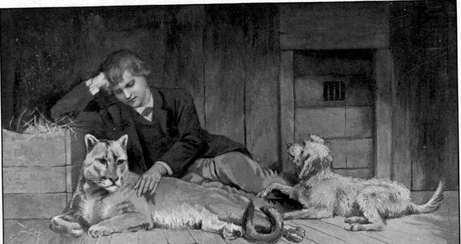

When Clare awoke, he knew he had been asleep a long time. It was, notwithstanding, quite dark, and there was something wrong with him. His head ached: it had never ached before. He put out his hands: Pummy’s hairy body was nowhere near. He called Abdiel: no whimper answered; no cold nose was thrust into his hand. He had gone to sleep, surely between his two friends! Could he have only dreamed it?
Why was the darkness so thick? There must surely be light in the clouds by this time! He felt half awake and half dreaming.
What was the curious motion he grew aware of? Was something trying to keep him asleep, or was something trying to wake him? Had they put him in a big cradle? Were they heaving him about to rouse him? Or could it be a gentle earthquake that was rocking him to and fro? Would it wake up in earnest presently, and pull and push, and shake and rattle, until the dome of the angels came shivering down upon him?
Where was he? Not on the hard floor of Pummy’s cage, but on something much harder—like iron. Was he in the wagon in which they carried the things for setting up the show? Something had happened to him, and his mother was taking him with her! But in that case he would be lying softer! She would not have given him a bed so full of aches!

What would they think at the bank? What would little Ann think if he came to her no more?
He could not be in a caravan; the motion was much too smooth and pleasant for that!
He put his hand to his face: what was it wet on his cheek? It did not feel nice; it felt like blood! Had he had a blow on the head? Was that what gave him this headache? He felt his head all over, but could find no hurt.
Why was he lying like a log, wondering and wondering, instead of getting up and seeing what it all meant? It must be the darkness and the headache that kept him down! The place was very close! He must get out of it!
He tried to get on his feet, but as he rose, his head struck something, and he dropped back. He got again on his knees and groped about. On all sides he was closed in. But he was not shut in a dungeon of stone. He seemed to be in a great wooden box—small enough to be a box, much too large for a coffin. Could it be one of the oubliettes in the roof of the doge’s palace at Venice? He laughed at the idea, for the motion continued, the gentle earthquake that seemed trying to rock him to sleep: the doge’s palace could hardly be afloat on the grand canal!
What could it all mean? What would little Ann do without him? She would not cry: she never cried—at least, he had never seen her cry! but that would not make it easier for her!
What had become of Abdiel? Had Glum Gunn got him? Then the wet on his face was Abdiel’s blood—shed in his defence, perhaps, when his enemies were taking him away!
Fears and anxieties, such as he had never known before, began to crowd upon him—not for himself; he was not made to think of himself, either first or second. Something dreadful might be going on that he could not prevent! He had never been so miserable. It was high time to do something—to ask the great one somewhere, he did not know where, who could somehow, he did not know how, hear the thoughts that were not words, to do what ought to be done for little Ann, and Abdiel, and Pummy! He prayed in his heart, lay still, and fell fast asleep.
He came to himself again, in the act of drawing a deep breath of cool, delicious air. He was no longer shut in the dark, stifling box. He was coming alive! A comforting wind blew all about him. It was like a live thing putting its own life into him. But his eyelids were heavy; he was unable to open them.
All at once they opened of themselves.
The dome of the angels had come down and closed in round him, but bringing room for him, taking none away. It was blue, and filled with the loveliest white clouds, possessed by a blowing wind that never was able to blow them away. They were of strangely regular shapes; not the less were they alive—piled one above the other, up and up—up ever so high! They all kept their places, and some had the loveliest blue shadows upon them, which glided about a little. But the dome of the angels rose high, and ever higher still, above them. The dome of the angels was at home, and the clouds were at home in it. He gazed entranced at the sight. Then came a sudden strong heave and roll of the earthquake, and a light shone in his eyes that blinded him.
It was but the strong friendly sun. When Clare opened his eyes again, he knew that he was lying on the deck of one of the great ships he had so frequently looked at from the shore. Oh, how often had he not longed after this one and that one of them, as if in some one somewhere, perhaps in that one, lay something he could not do without, which yet he could never set his eyes, not to say his hands upon. He had his heart’s desire, and what was to come of it? He lay on the ship, and the ship lay on the sea, a little world afloat on the water, moving as a planet moves through the heavens, but carrying her own heaven with her, attended by her own clouds, bearing her whither she would. Up into those clouds he lay gazing, up into the dome of the angels, drawing deeper and deeper breaths of gladness, too happy to think—when a foot came with a kick in the ribs, and a voice ordered him to get up: was he going to lie there till the frigate was paid off?